컴퓨터응용선반기능사 (2014-04-06 기출문제)
1과목: 기계재료 및 요소
1. 열처리란 탄소강을 기본으로 하는 철강에서 매우 중요한 작업이다. 열처리의 특성을 잘못 설명한 것은?
- 내부의 응력과 변형을 감소시킨다.
- 표면을 연화시키는 등의 성질을 변화시킨다.
- 기계적 성질을 향상 시킨다.
- 강의 전기적/자기적 성질을 향상시킨다.
(정답률: 48%)

2. 5~20%Zn의 황동으로 강도는 낮으나 전연성이 좋고 황금색에 가까우며 금박대용, 황동단추 등에 사용되는 구리 합금은?
- 톰백
- 문쯔메탈
- 델타메탈
- 주석황동
(정답률: 69%)
3. 다음 중 플라스틱 재료로서 동일 중량으로 기계적 강도가 강철보다 강력한 재질은?
- 글라스 섬유
- 폴리카보네이트
- 나일론
- FRP
(정답률: 70%)
4. 일반 구조용 압연강재의 KS 기호는?
- SS330
- SM400A
- SM45C
- SNC415
(정답률: 61%)
5. 철과 탄소는 약 6.68% 탄소에서 탄화철이라는 화합물을 만드는데 이 탄소강의 표준조직은 무엇인가?
- 펄라이트
- 오스테나이트
- 시멘타이트
- 솔바이트
(정답률: 52%)
6. 비철금속 구리(Cu)가 다른 금속 재료와 비교해 우수한 것중 틀린 것은?
- 연하고 전연성이 좋아 가공하기 쉽다.
- 전기 및 열전도율이 낮다.
- 아름다운 색을 띠고 있다.
- 구리합금은 철강 재료에 비하여 내식성이 좋다.
(정답률: 79%)
7. 강의 표면 경화법으로 금속 표면에 탄소(C)를 침입 고용 시키는 방법은?
- 질화법
- 침탄법
- 화염경화법
- 숏피닝
(정답률: 86%)
8. 왕복운동 기관에서 직선운동과 회전운동을 상호 전달할 수 있는 축은?
- 직선 축
- 크랭크 축
- 중공 축
- 플렉시블 축
(정답률: 68%)
9. 재료의 안전성을 고려하여 허용할 수 있는 최대응력을 무엇이라 하는가?
- 주 응력
- 사용 응력
- 수직 응력
- 허용 응력
(정답률: 89%)
10. 스퍼 기어에서 Z는 잇수(개)이고, P가 지름피치(인치)일 때 피치원 지름(D, mm)를 구하는 공식은?
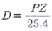
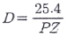
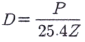
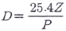
(정답률: 50%)
11. 큰 토크를 전달시키기 위해 같은 모양의 키 홈을 등 간격으로 파서 축과 보스를 잘 미끄러질 수 있도록 만든 기계 요소는?
- 코터
- 묻힘 키
- 스플라인
- 테이퍼 키
(정답률: 64%)
12. 스프링의 길이가 100 mm 인 한 끝을 고정하고, 다른 한 끝에 무게 40 N 의 추를 달았더니 스프링의 전체 길이가 120 mm 로 늘어났을 때 스프링 상수는 몇 N/mm 인가?
- 8
- 4
- 2
- 1
(정답률: 65%)
13. 다음 벨트 중에서 인장강도가 대단히 크고 수명이 가장 긴 벨트는?
- 가죽 벨트
- 강철 벨트
- 고무 벨트
- 섬유 벨트
(정답률: 70%)
14. 축이음 기계요소 중 플렉시블 커플링에 속하는 것은?
- 올덤 커플링
- 셀러 커플링
- 클램프 커플링
- 마찰 원통 커플링
(정답률: 61%)
15. 회전체의 균형을 좋게 하거나 너트를 외부에 돌출시키지 않으려고 할 때 주로 사용하는 너트는?(오류 신고가 접수된 문제입니다. 반드시 정답과 해설을 확인하시기 바랍니다.)
- 캡 너트
- 둥근 너트
- 육각 너트
- 와셔붙이 너트
(정답률: 58%)
2과목: 기계제도(절삭부분)
16. 그림의 치수 기입 방법 중 옳게 나타낸 것을 모두 고른 것은?
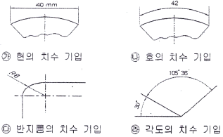
- 가, 나, 다, 라
- 나, 다, 라
- 가, 나, 다
- 나, 다
(정답률: 57%)
17. 그림과 같은 입체도에서 화살표 방향에서 본 것을 정면도로 하여 3각법으로 투상한 것으로 가장 적합한 것은?
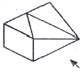
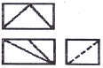
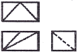
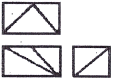
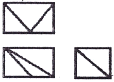
(정답률: 68%)
18. 다음 중 분할핀 호칭 지름에 해당하는 것은?
- 분할 핀 구멍의 지름
- 분할 상태의 핀의 단면지름
- 분할 핀의 길이
- 분할 상태의 두께
(정답률: 59%)
19. 투상면이 어느 각도를 가지고 있기 때문에 그 실형을 도시하기 위하여 그림과 같이 나타내는 투상법의 명칭은?
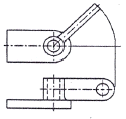
- 보조 투상도
- 부분 투상도
- 회전 투상도
- 국부 투상도
(정답률: 67%)
20. 기하공차의 종류별 기호가 잘못된 연결된 것은?
- 평면도 :
- 원통도 :
- 위치도 :
- 진직도 :
(정답률: 65%)
21. 베어링 기호가 "F684C2P6"으로 나타나 있을 때 "68"이 나타내는 뜻은?
- 안지름 번호
- 베어링 계열 기호
- 궤도륜 모양 기호
- 정밀도 등급 기호
(정답률: 67%)
22. 오른쪽 그림과 같이 절단면에 색칠한 것을 무엇이라고 하는가?
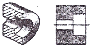
- 해칭
- 단면
- 투상
- 스머징
(정답률: 60%)
23. 끼워 맞춤 방식에서 구멍의 치수가 축의 치수보다 큰 경우 그 치수의 차를 무엇이라고 하는가?
- 위치수 공차
- 죔새
- 틈새
- 허용차
(정답률: 73%)
24. 미터 사다리꼴 나사에서 나사의 호칭 지름인 것은?
- 수나사의 골지름
- 수나사의 유효지름
- 암나사의 유효지름
- 수나사의 바깥지름
(정답률: 61%)
25. 가공에 의한 컷의 줄무늬가 기호를 기입한 면의 중심에 대하여 거의 동심원 모양인 경우의 기호는?
- C
- M
- R
- X
(정답률: 75%)
26. 다음과 같은 연삭숫돌 표시 기호 중 밑줄 친 K가 뜻하는 것은?
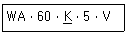
- 숫돌입자
- 조직
- 결합도
- 결합제
(정답률: 65%)
27. 밀링 커터의 주요 공구각 중에서 공구와 공작물이 서로 접촉하여 마찰이 일어나는 것을 방지하는 역할을 하는 것은?
- 여유각
- 경사각
- 날끝각
- 비트림각
(정답률: 78%)
28. 절삭 공구를 재연삭하거나 새로운 절삭공구로 바꾸기 위한 공구수명 판정기준으로 거리가 먼 것은?
- 가공면에 광택이 있는 색조 또는 반점이 생길 때
- 공구 인선의 마모가 일정량에 도달했을 때
- 완성치수의 변화량이 일정량에 도달했을 때
- 주철과 같은 메진 재료를 저속으로 절삭했을 시 균열형 칩이 발생할 때
(정답률: 57%)
29. 다음 중 일반적으로 각도 측정에 사용되는 측정기는?
- 사인 바(sine bar)
- 공기 마이크로미터(air micrometer)
- 하이트 게이지(height gauge)
- 다이얼 게이지(dial gauge)
(정답률: 82%)
30. 일반 드릴에 대한 설명으로 틀린 것은?
- 사심(dead center)은 드릴 날 끝에서 만나는 부분이다.
- 표준 드릴의 날끝각은 118° 이다.
- 마진(margin)은 드릴을 안내하는 역할을 한다.
- 드릴의 지름이 13mm 이상의 것은 곧은 자루 형태이다.
(정답률: 50%)
3과목: 기계공작법
31. 선반에서 양센터 작업을 할 때, 주축의 회전력을 가공물에 전달하기 위해 사용하는 부속품은?
- 연동척과 단동척
- 돌림판과 돌리개
- 면판과 클램프
- 고정 방진구와 이동 방진구
(정답률: 58%)
32. 주로 대형 공작물이 테이블 위에 고정되어 수평 왕복 운동을 하고 바이트를 공작물의 운동 방향과 직각 방향으로 이송시켜서 평면, 수직면, 홈, 경사면 등을 가공하는 공작기계는?
- 플레이너
- 호빙 머신
- 보링 머신
- 슬로터
(정답률: 54%)
33. 다음 중 비교 측정기에 해당하는 것은?
- 버니어 캘리퍼스
- 마이크로미터
- 다이얼 게이지
- 하이트 게이지
(정답률: 64%)
34. 밀링 머신의 주요 구성 요소로 틀린 것은?
- 니(knee)
- 컬럼(column)
- 테이블(table)
- 맨드릴(mandrel)
(정답률: 63%)
35. 구성인선(built-up edge)의 방지 대책으로 틀린 것은?
- 경사각(rake angle)을 크게 할 것
- 절삭 깊이를 크게 할 것
- 윤활성이 좋은 절삭유를 사용할 것
- 절삭 속도를 크게 할 것
(정답률: 72%)
36. 수용성 절삭유제의 특징에 관한 설명으로 옳은 것은?
- 윤활성은 좋으나 냉각성이 적어 경절삭용으로 사용한다.
- 윤활성과 냉각성이 떨어져 잘 사용되지 않고 있다.
- 점성이 낮고 비열이 커서 냉각효과가 크다.
- 광유에 비눗물을 첨가하여 사용하며 비교적 냉각효과가 크다.
(정답률: 61%)
37. 밀링 머신에서 테이블의 이송속도를 나타내는 식은?(단, F:테이블 이송속도(mm/min), Fz:커너 칼 1개마다의 이송(mm), z:커터의 날수, n:커터의 회전수(rpm))
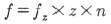
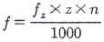
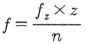
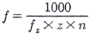
(정답률: 65%)
38. 래핑 가공에 대한 설명으로 옳지 않은 것은?
- 래핑은 랩이라고 하는 공구와 다듬질하려고 하는 공작 물 사이에 랩제를 넣고 공작물을 누르며 상대운동을 시켜 다듬질하는 가공법을 말한다.
- 래핑 방식으로는 습식래핑과 건식래핑이 있다.
- 랩은 공작물 재료보다 경도가 낮아야 공작물에 흠질이나 상처를 일으키지 않는다.
- 건식래핑은 절삭량이 많고 다음면은 광택이 적어 일반적으로 초기 래핑작업에 많이 사용한다.
(정답률: 45%)
39. 연삭기의 연삭 방식 중 외경 연삭의 방법에 해당하지 않는 것은?
- 유성형
- 테이블 왕복형
- 숫돌대 왕복형
- 플랜지 컷형
(정답률: 45%)
40. 선반의 종류 중 볼트, 작은 나사 등을 능률적으로 가공하기 위하여 보통 선반의 심압대 대신에 회전공구대를 설치하여 여러 가지 절삭공구를 공정에 맞게 설치한 선반은?
- 자동선반(automatic lathe)
- 터릿선반(turret lathe)
- 모방선반(copying lathe)
- 정면선반((face lathe)
(정답률: 61%)
4과목: CNC공작법 및 안전관리
41. 다음 가공물의 테이퍼 값은 얼마인가?
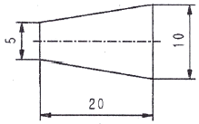
- 0.25
- 0.5
- 1.5
- 2
(정답률: 49%)
42. 다음 중 정밀입자에 의하여 가공하는 기계는?
- 밀링 머신
- 보링 머신
- 래핑 머신
- 와이어 컷 방전 가공기
(정답률: 55%)
43. 다음은 CNC 프로그램의 일부분이다. 여기에서 L4가 의미하는 것으로 가장 올바른 것은?
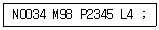
- 보조프로그램 호출번호 명령이 4번임을 뜻한다.
- 보조프로그램의 반복 횟수를 4회 실행하라는 뜻이다.
- 나사가공프로그램에서 나사의 리드가 4mm 임을 뜻한다.
- 보조프로그램 호출 후 다른 보조프로그램을 4번 호출 한다는 뜻이다.
(정답률: 52%)
44. ø50mm SM20C 재질의 가공물을 CNC 선반에서 작업할 때 절삭속도가 80m/min이라면, 적절한 스핀들의 회전수는 약 얼마인가?
- 510 rpm
- 1020 rpm
- 1600 rpm
- 2040 rpm
(정답률: 47%)
45. 다음 중 드릴가공에서 휴지기능을 이용하여 바닥면을 다듬질하는 기능은?
- 머신 록
- 싱글블록
- 오프셋
- 드웰
(정답률: 77%)
46. 다음 중 CNC 선반 프로그래밍에서 소수점을 사용할 수 있는 어드레스로 구성된 것은?
- X, U, R, F
- W, I, K, P
- Z, G, D, Q
- P, X, N, E
(정답률: 73%)
47. 근래에 생산되는 대형 정밀 CNC 고속가공기에 주로 사용되며 모터에서 속도를 검출하고, 테이블에 리니어 스케일을 부착하여 위치를 피드백 하는 서보기구 방식은?
- 개방회로 방식
- 반폐쇄회로 방식
- 폐쇄회로 방식
- 복합회로 방식
(정답률: 41%)
48. 다음 중 CNC 공작기계의 점검시 매일 실시하여야 하는 사항과 가장 거리가 먼 것은?
- ATC 작동점검
- 주축의 회전점검
- 기계정도검사
- 습동유 공급 상태점검
(정답률: 66%)
49. 다음 중 CNC 공작기계에서 이송속도(Feed Speed)에 대한 설명으로 틀린 것은?
- CNC 선반의 경우 가공물이 1회전할 때 공구의 가로방향 이송을 주로 사용한다.
- CNC 선반의 경우 회전당 이송인 G98이 전원공급시 설정 된다.
- 날이 2개 이상인 공구를 사용하는 머시닝센터의 경우 분당이송을 주로 사용한다.
- 머시닝센터의 경우 분당 이송거리는 "날당 이송거리 × 공구의 날수 × 회전수"로 계산된다.
(정답률: 50%)
50. 다음 머시닝센터 가공용 CNC 프로그램에서 G80의 의미는?
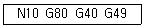
- 공구경 보정 취소
- 위치결정 취소
- 공구길이 보정 취소
- 고정사이클 취소
(정답률: 52%)
51. 다음 중 CNC 공작기계 운전 중의 안전사항으로 틀린 것은?
- 가공 중에는 측정을 하지 않는다.
- 일감은 견고하게 고정시킨다.
- 가공 중에 칩을 손으로 제거한다.
- 옆 사람과 잡담을 하지 않는다.
(정답률: 87%)
52. CNC 선반에서 ø52 부분을 가공하고, 측정한 결과 ø51.97이었다. 기존의 X축 보정값이 0.002라면 보정값을 얼마로 수정해야 ø52로 가공되는가?
- 0.002
- 0.028
- 0.03
- 0.032
(정답률: 62%)
53. 1대의 컴퓨터에서 여러 대의 CNC 공작기계에 테이터를 분배하여 전송함으로써 동시에 직접 제어, 운전할 수 있는 방식을 무엇이라 하는가?
- DNC
- CAM
- FA
- FMS
(정답률: 72%)
54. 그림에서 단면절삭 고정사이클을 이용한 프로그램의 준비 기능은?
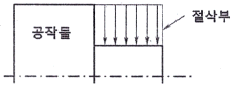
- G76
- G90
- G92
- G94
(정답률: 33%)
55. 다음 머시닝센터 프로그램 중에서 사용된 공구길이 보정을 나타내는 준비기능(G 코드)은 어느 것인가?
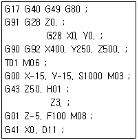
- G40
- G41
- G43
- G91
(정답률: 50%)
56. 다음 중 CNC 공작기계 사용시 비경제적인 작업은?
- 작업이 단순하고, 수량이 1 ~ 2 개인 수리용 부품
- 항공기 부품과 같이 정밀한 부품
- 곡면이 많이 포함되어 있는 부품
- 다품종이며 로트당 생산수량이 비교적 적은 부품
(정답률: 56%)
57. 그림은 CNC선반 프로그램에서 P1에서 P2로 진행하는 블록을 나타낸 것이다. ( ) 안에 알맞은 명령어는?
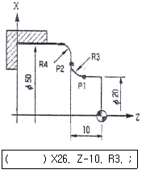
- G01
- G02
- G03
- G04
(정답률: 66%)
58. 다음 중 CNC 선반에서 G96(주축속도일정제어)의 설명으로 옳은 것은?
- 공작물의 직경에 관계없이 회전수는 일정하다.
- 공작물 직경에 관계없이 가공 중 원주속도는 일정하다.
- 절삭시 공구가 공작물 직경이 감소하는 방향으로 진행하면 주축의 회전수도 감소한다.
- 나사가공이나 홈 가공시 많이 이용한다.
(정답률: 39%)
59. 다음 중 선반 작업에서 방호조치로 적합하지 않은 것은?
- 긴 일감 가공시 덮개를 부착한다.
- 작업 중 급정지를 위해 역회전 스위치를 설치한다.
- 칩이 짧게 끊어지도록 칩브레이커를 둔 바이트를 사용한다.
- 칩이나 절삭유등의 비산으로부터 보호를 위해 이동용 쉴드를 설치한다.
(정답률: 74%)
60. CNC 선반에서 복합형 고정사이클 G76을 사용하여 나사가공을 하려고 한다. G76에 사용되는 X의 값은 무엇을 의미하는가?
- 골지름
- 바깥지름
- 안지름
- 유효지름
(정답률: 34%)